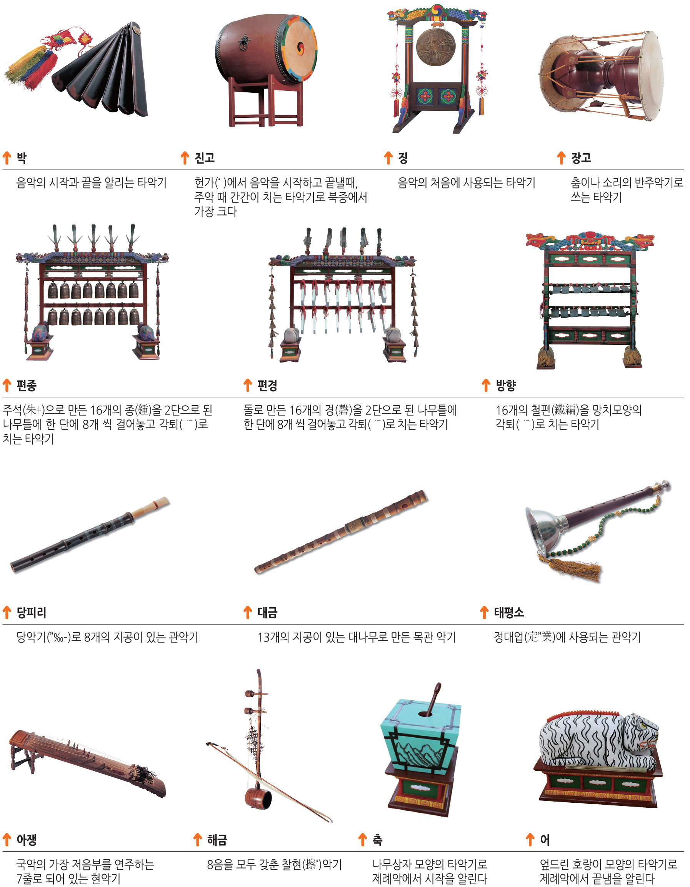
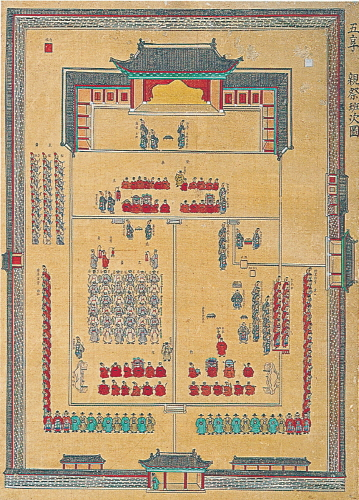

종묘제례악은 종묘(조선시대 역대 왕과 왕비의 신위를 모신 사당)에서 종묘제례를 지낼 때 무용과 노래와 악기를 사용하여 연주하는 음악을 가리킨다. 종묘제례악은 동북아시아의 고대 궁중과 상류층에서 연주되던 전통음악인 아악과 한국 전통 음악을 조화시킨 15세기 창작품으로 오늘까지 역사적 단절 없이 연주되어 온 한국음악 최고 명작 중의 하나이며 현재 중요무형문화재 제1호이다.
2.역사
1425년(세종 7) 세종대왕은 친히 종묘에 제향하고 환궁한 뒤 이조판서 허조(許稠)에게 "종묘대제에 먼저 당악(唐樂)을 쓰고 겨우 종헌(終獻)에서야 향악(鄕樂)을 쓰니 앞으로는 조고 신령(祖考神靈)께서 생시에 익히 들으시던 향악으로 아뢰게 하는 것이 어떠할지 맹사성(孟思誠)과 의논하라"고 하였고, 중국 음악이론가 박연(朴堧)과 사대적(事大的) 유신(儒臣)들의 반대 속에서도 "우리의 향악을 버릴 수 없다"라는 굳은 의지로 마침내 1435년(세종 17) 우리의 향악으로 《보태평(保太平)》 11곡(曲)과 《정대업(定大業)》 15곡을 만들어냈다. 그러나 이것이 처음에는 제사음악이 아니고 조종(祖宗)의 공덕을 기리고 개국 창업(開國創業)의 어려움을 길이 기념하기 위하여 국초(國初)의 고취악(鼓吹樂)과 향악을 참작하여 만들었던 것이며, 이것이 종묘의 제례악으로 채택된 것은 1463년(세조 9)이었다. 세조는 "《정대업》과 《보태평》은 그 성용(聲容)이 성대하므로 종묘에 쓰지 않음은 가석(可惜)타"(세조실록)하여 최항(崔恒)에게 명하여 간단히 간추려 고치게 한 후 제례악으로 채택케 하였다.
종묘제례악은 본래 제사를 위해 창작된 것이 아니었다. 세종17년(1435) 보태평 11곡(현행 종묘제례의 영신(신을 맞아들이는 것)과 전폐(제례 때 폐백을 올리는 것) · 초헌례(초헌관이 신위 앞에 첫번째 술잔을 올리는 것에서 아뢰는 악무(노래와 춤))의 하나.)과 정대업 15곡(현행 종묘제례(宗廟祭禮)의 아헌례(亞獻禮)와 종례(終獻禮)에서 연주하는 악무(노래와 춤)의 하나.)을 만들었다. 세종 29년(1447) 궁중회례연에 사용하기 위해 종묘제례악이 창작되었다. 세조 10년(1464) 제사에 적합하게 고친 후 지금까지 전승되고 있다. 종묘제례악은 조선말기까지 《장악원》(掌樂院) 악사(樂士)들에 의하여 전승되었고, 일제강점기 때에는 일제에 의하여 사라질 뻔 하였으나, 《구황궁아악부》(舊皇宮雅樂部) 악사에 의하여 전승되었으며, 광복 후에는 《국립국악원》 악사들에 의하여 전승되고 있다. 매년 5월 첫째 일요일에 봉행하는 종묘대제에서 보태평 11곡과 정대업 11곡이 연주되고 있다. 2001년 5월 18일, 유네스코 인류무형문화유산으로 등재되었다.
3.특징
가로
3.1.사용되는 악기

종묘제례악에 사용되는 악기로는 위의 그림과 같이 박, 진고, 징, 장고, 편종, 편경, 방향, 당피리, 대금, 태평소, 아쟁, 해금, 축, 어가 있으며 징이 들어가기도 한다. 총 15가지 종류의 악기가 포함된 종묘제례악은 시대에 따라서 들어가는 악기가 변해왔다. 세조 당시에는 팔음八音을 갖춘 40여 종에 이르는 대편성이었지만, 임진왜란과 병자호란 등을 치른 후 팔음을 구비하지 못한 채 연주되었다. 팔음이란 악기재료에 따른 분류법으로 금金·석石·사絲·죽竹·포匏·토土·혁革·목木의 8가지 재료에 따른 분류법이다. 종묘제례악은 두 개의 악단에서 연주를 하게 되는데 당상에서 연주되는 등가에는 편종과 편경, 방향, 축, 절고, 장구, 어 , 당피리, 대금, 해금, 아쟁과 노래가 편성되고, 당하에서 연주되는 헌가는 편종, 편경, 방향, 진고, 어, 장구, 축, 징, 태평소, 당피리, 대금, 해금, 노래가 편성된다.
3.2.악기의 배치

이 그림은 ＜오향친제반차도(五享親祭班次圖)＞ 종묘제례도병(宗廟祭禮圖屛)의 제7첩으로 종묘제례를 할 때의 제관(祭冠), 배석자, 악사가 묘사되어 있다.
종묘제례악의 절차는 선행절차 → 취위(就位, 제사가 시작하기 전에 제관들이 정해진 자리에 배치됨) → 영신(迎神, 조상신을 맞이함) → 신관례(神관禮, 왕이 제실까지 가서 향을 피워 신을 맞아들임) → 진찬(進饌, 음식과 고기를 드림) → 초헌례(初獻禮, 초헌관이 술을 올리고 절하며 축문을 읽음) → 아헌례(亞獻禮, 신에게 둘째 술잔을 올림) → 종헌례(終獻禮, 마지막 술잔을 올림) → 음복례(飮福禮, 제사에 쓴 술이나 음식을 나누어 먹음) → 철변두(撤변豆, 제상에 놓인 고기나 과일을 거둠) → 송신(送神, 조상신을 보냄) → 망료(望燎, 제례에 쓰인 축문과 폐를 태움) → 제후처리(祭後處理)의 순서로 진행된다.
4.보존해야하는 이유
종묘제례악을 보존해야하는 이유는 여러 가지가 있다. 그 이유는 크게 역사적 가치, 유네스코 인류무형문화유산, 한국의 문화 등으로 나눌 수 있다.
4.1.역사적 가치
종묘제례악은 당대의 이념과 사상을 반영한 시대적 산물이다. 유교사회에서는 길례(吉禮)·흉례(凶禮)·군례(軍禮)·빈례(賓禮)·가례(家禮)의 다섯 의례(五禮) 중 길례인 제사를 으뜸으로 여겼으며, 이를 '효' 실천의 근본으로 삼았다. 유교가 국가의 근본이념이었던 조선시대에도 조상에 대한 숭배를 인간의 도리이자 나라를 다스리는 가장 중요한 법도로 여겨 제사를 특히 중시하였으며, 예로부터 종묘와 사직을 세우고 나라를 건국하고 번영시킨 왕과 왕실의 조상과 국가 발전에 공헌한 문무대신들에게 제사를 드렸다. 이러한 시대상을 잘 반영하고 있는 종묘제례악은 현대에 와서 그 문화를 보존하기 위해서 보존되어야 하는 존재이다.
4.2.유네스코 인류무형문화유산
종묘제례악은 2001년 유네스코 인류무형문화유산으로 지정되었다. 이는 종묘제례악이 그만큼 보존해야 할 가치가 크다는 것을 의미한다. 우리는 유네스코 인류무형문화유산인 종묘제례악을 후대에 남겨야 한다. 그것이 우리의 문화를 지키는 일이 될 것이다.
4.3.한국의 문화
종묘제례악은 위에서도 말했듯 역사적 가치를 인정받아 유네스코 인류무형문화유산으로 인정받게 되었다. 종묘제례악에 대한 역사적 가치는 우리나라 즉 대한민국의 역사에 대한 가치라고 볼 수 있다. 우리는 자랑스러운 우리의 역사를 기억하며 기념하며 후대에 남겨야 한다. 그렇지 않는다면 우리의 역사와 문화가 잊혀져 결국 사라질 수 있기 때문이다.
4.4.기타
이 외에도 여러가지 이유로 종묘제례악은 보존되어야 한다. 그 중 가장 큰 이유는 종묘제례악이 굉장히 인상 깊고 아름다운 음악이라는 것이다. 종묘제례악은 15가지의 국악기를 사용하여 연주하는 음악인데 이 소리가 정말 아름답게 들린다. 이러한 아름다운 음악을 더욱 오랫동안 보존해야 할 이유는 너무나도 자명하여 더 설명하지 않아도 될 듯 하다.